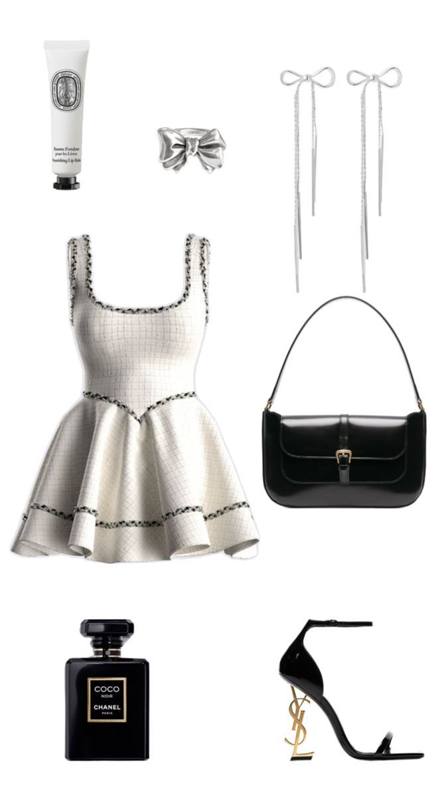
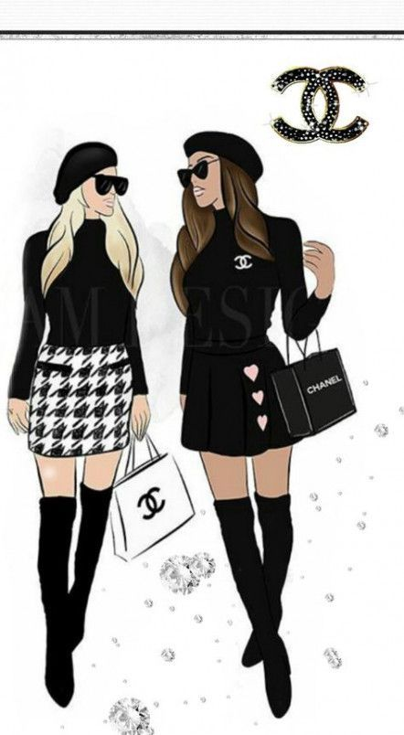
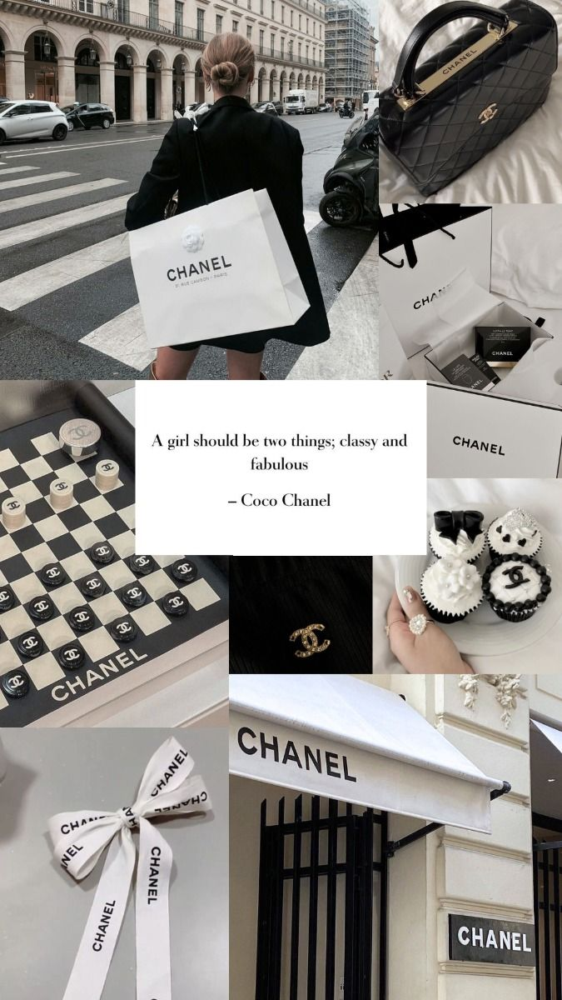

ABOUT THE STORE
Chanel specializes in women's ready-to-wear, luxury goods, and accessories and licenses its name and branding to Luxottica for eyewear. Chanel is well known for its No. 5 perfume and "Chanel Suit".
Chanel is a private company and world leader in creating, manufacturing and distributing luxury products, including Ready-to-Wear, Accessories, Fragrances, Makeup, Skincare, Jewellery and Watches
Elegance, simplicity, monochrome colours, and well-fitting clothes are what made her, and her brand stand out. That is also summed up in one of Coco Chanel's popular fashion quotes “fashion changes, but style endures.”
Key elements of CHANEL's advertising include strategic celebrity endorsements, iconic imagery, emotionally resonant storytelling, high production values, and exclusivity, all contributing to CHANEL's identity as an enduring symbol of luxury that invites consumers into a world of timeless beauty and grace.
Chanel's uncluttered styles, with their boxy lines and shortened skirts, allowed women to leave their corsets behind and freed them for the practical activities made necessary by the war. Elements of these early designs became hallmarks of the Chanel look
.jpg)